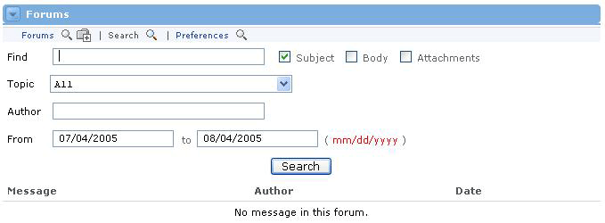

Occasionally, the Forums channel may become cluttered with out-of-date and/or inappropriate messages. In this case, archiving is the best option. The Archive feature will temporarily remove an entire thread (including the first message and all subsequent replies) from the channel. This is not a permanent deletion; archived messages can be recovered.
To archive a thread, follow these steps:
To "unarchive" a message thread, simply follow the same steps above and uncheck any threads that need to be recovered. If a thread is checked, it is archived. If it is unchecked, it is visible.
Searching the Forums
The Forums Channel may eventually become highly populated with messages. In this event, the Search feature will come in handy. This feature allows searches on text within a message, within the subject, or on attachment files. Message searches can be refined to locate posts from within a specific topic, by a specific author, or by posting dates.
To conduct a search, follow these steps:

The Preferences link allows users to change the presentation of posts within the Forums Channel. On the Preferences screen, users can choose, whether message content should be viewed in a new screen or within the same screen

If the preference to go to a new screen to view message content is not selected, the forum presentation will appear as in the screenshot below. Allowing the user to view both the contents of an individual post and the hierarchical message tree.